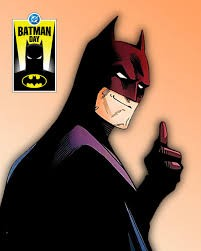
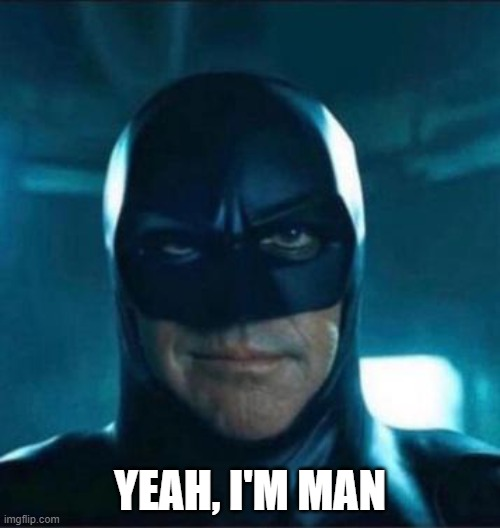
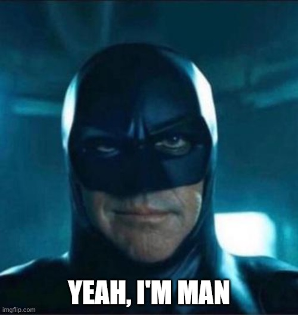
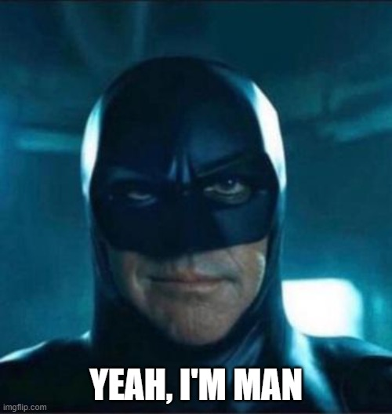

Quem é Batman?
Batman (Bruce Wayne) é um personagem da DC Comics que atua como justiceiro de Gotham. Ele não tem superpoderes: sua força está em treinamento, inteligencia e recursos (ou seja, rico).
Nas Histórias, Gotham costuma representar problemas sociais reais: desigualdade, corrupção e violencia urbana, Muitos quadrinhos usam Batman como forma de crítica social, mostrando como decisões políticas, interresses economicos, falhas nas instituições e no autoritarismo afetam o cotidiano das pessoas, especialmente nas periferias.
Galeria

 

